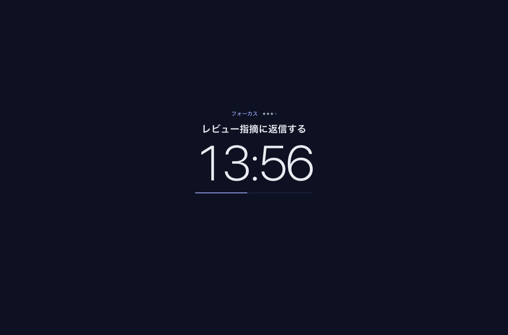

注意を一点に
始めると画面が沈み、周りが退く。手を止めれば、タスクと残り時間だけになる。
始めると画面が沈み、周りが退く。手を止めれば、タスクと残り時間だけになる。

一時停止やスリープの間は数えない。途中でタスクを替えても、時間はそれぞれに付く。

今日、いつ何をしていたか。直近の傾向も。記録はこの端末の中だけに置き、JSON と CSV で書き出せる。

残り時間はメニューバーと小さなタイマーに。区切りは通知とチャイムで。

macOS と Linux はターミナルで。更新も同じ。
curl -fsSL https://raw.githubusercontent.com/Anieca/pomodoro-timer/main/scripts/install.sh | bash/Applications に入れて起動する。署名のないアプリのため、ダウンロードの印を外す。~/.local/bin に AppImage を置く。| Space | 開始 / 一時停止 |
| N | タスクを足す |
| ⌘ 1 / ⌘ 2 | いま / ふりかえり |
| ⌘ , | 設定 |